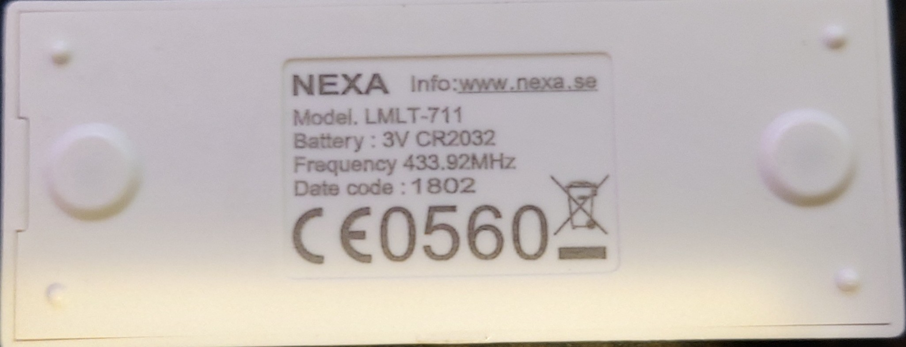
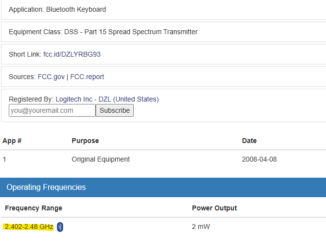
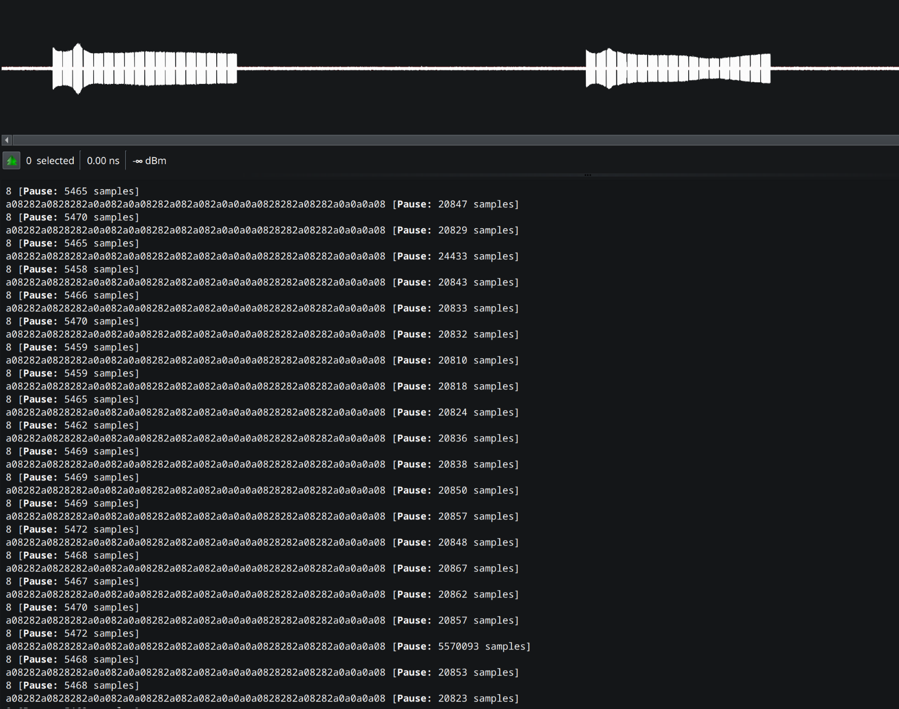
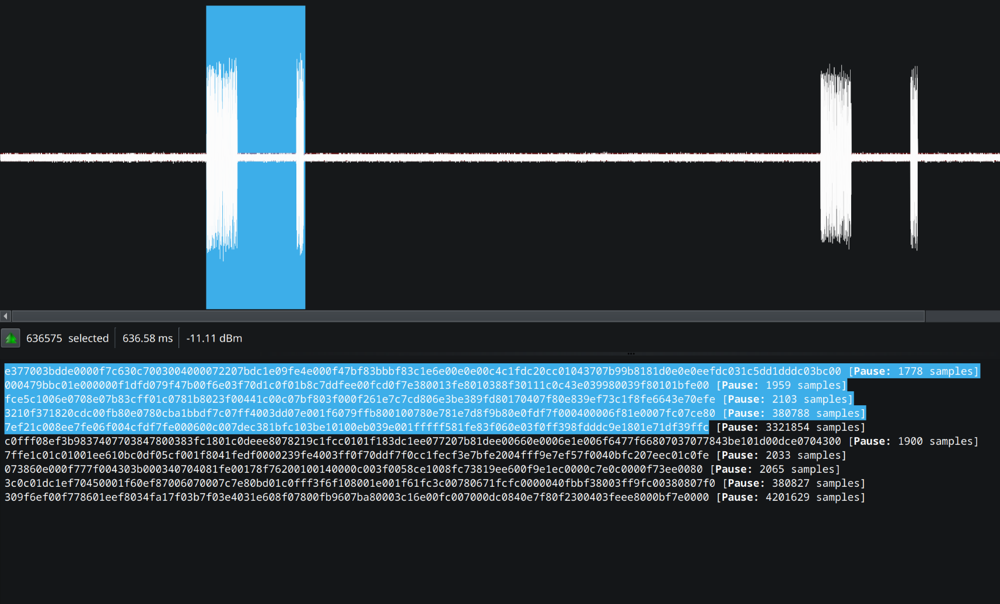

Tässä artikkelissa perehdyn tarkemmin kahdenlaisiin avain systeemeihin
Joskus kaukosäätimen käytetty taajuus löytyy ihan kaukosäätimestä

Toinen keino on katsoa laitteen FCC ID esim. sivustolta https://fccid.io/

Kolmas keino on käyttää spekrtianalysaattoria, joka katsoo taajuden isolta alueelta ja selvittää sillä mitä tajuutta laite käyttää
Static code toimii niin, että laiteella on vain yksi koodi, johon se reagoi
Tämä on erittäin helppo murtaa sillä ei tarvitse kuin kerran äänittää kyseinen koodi ja hyökkääjä pystyy sen jälkeen aina esim avata auton ovet
Kun tutkitaan kaukosäätimestä lähetävää signaalia tarkemmin URH:lla niin voidaan todeta, että jokainen painallus lähettää monta samaa signaalia

Rolling Code toimii niin, että laite lähettää joka kerta eri koodin
Tämä on vaikeampi murtaa sillä vaikka hyökkääjä saisiki tallennettua yhden koodin niin se koodi toimii vain kerran ja jos esim. auton ovet avataan avaimilla ennekun hyökkääjä kerkeää käyttämään omaa tallennustaan niin hyökkääjän tallentama koodi ei toimi enään
Kun tutkitaan auton avaimen signaalia tarkemin URH:lla huomataan että kun avainta on painettu kahdesti niin signaalit ovat täysin erillaiset

https://www.hackster.io/news/hacking-a-car-s-key-fob-with-a-rolljam-attack-7f863c10c8da
Rolljam Attack toimii avaimiin joissa on käytössä rolling code
Periaate on että on kaksi SDR:rää joista toinen häiritsee avaimen pääsyä autoon ja toinen nauhottaa avaimen
Kun henkilö yrittää avata auton ovet uudestaan tallentuu kaksi avainta joista vanhempi lähetetään uudestaan autolle, jotta ovet aukeavat
Hakkerilla on kuitenkin uusin avain tallessa ja voi käyttää sitä myöhemmin murtautuakseen autoon
Minulla ei ole kahta SDR:rää mutta koitin demonstroida tätä hyökkäystä yhdellä
Ensiksi testasin auton avaimen häirintää
Sitten testasin että jos on saatu kaksi avainta talteen niin toimiiko ne molemmat
Huomasin myöhemmin, että kun auton laittoi avaimella lukkoon niin se tallennettu avaus koodi ei enään toiminutkaan